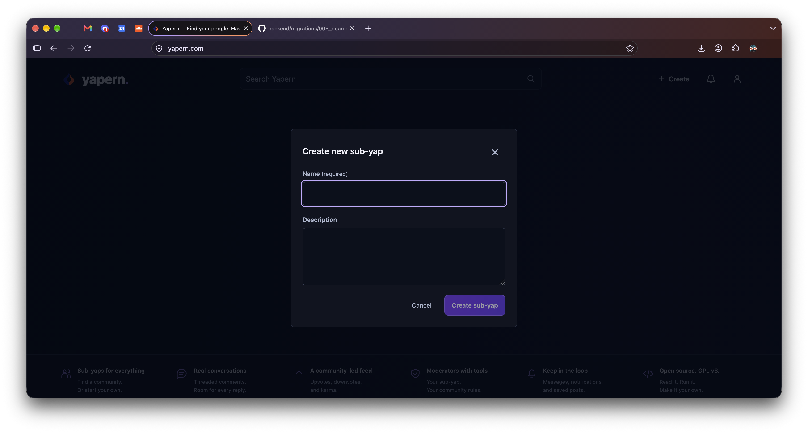
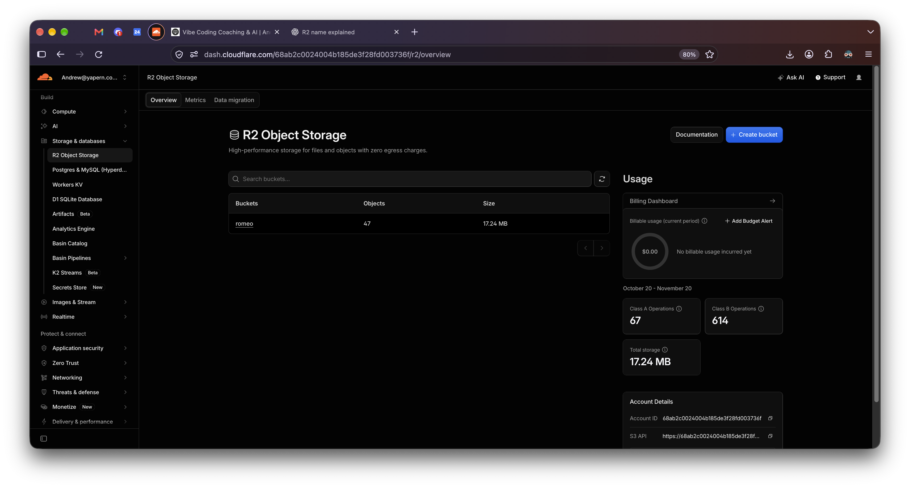

Did you notice on the live yapern site when you post a message you have to select a sub-yap? Notice line 26 here. Oh? What is this? Code? Well, sort of. This is SQL.
Not really code code. This is just database stuff. The database schema just described how each row of data is stored and with what other meta data. What is meta data? Data about data. Why am I making you look at code? You thought the whole point of vibe coding is you don't have to look? Yes and no. It's a balancing act. You want to understand enough to notice when codex does something wrong. Copy and paste the migrations/003_boards_messages_replies.sql file into your codex and explain you need this same schema.

Also tell it you need a way to create new sub-yaps.
Excellent question. This is common in software for there to be a consumer facing name like sub-yap and a code name that's completely different. The representation in the database of our data is just messages and each message belongs to a board. Maybe in another version of this code the consumer name isn't sub-yap. It doesn't matter what the name is as long as we are consistant. And something like sub-yap that might change is better left as a consumer name and not something actually in the code.
Another great question. It's time for buckets. The original bucket system is Amazon S3 which stands for Simple Storage Service hence the 3 S-words. But on CloudFlare their version of this is called R2. Cloudflare R2 is named as a deliberate play on Amazon S3. The idea is S3 − 1 = R2 (R is the letter before S in the alphabet) Cloudflare wanted to offer everything developers liked about S3, minus the thing they hated: egress fees (charges for downloading data). It's also Ridiculously Reliable. And it's also the nickname of that little droid.

There's no fee for buckets on Cloudflare in the free plan up to 10GB of storage. But you do have to put down a credit card and agree to pay for storage if it exceeds that limit. Go ahead and turn on your R2 bucket in dash.